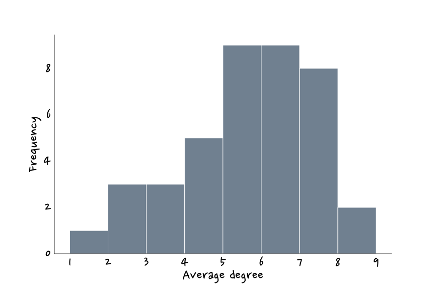
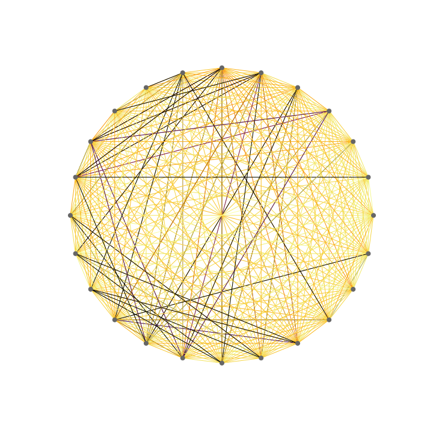
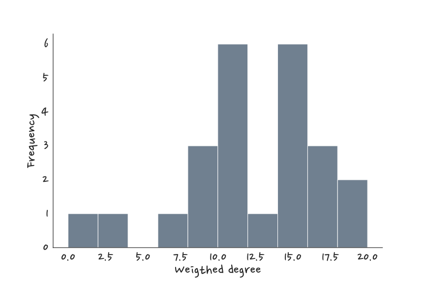
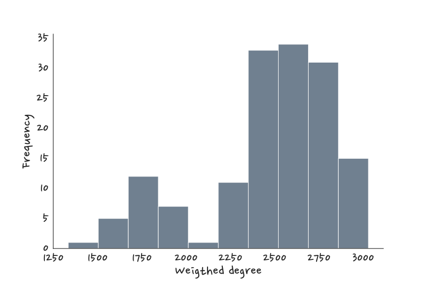
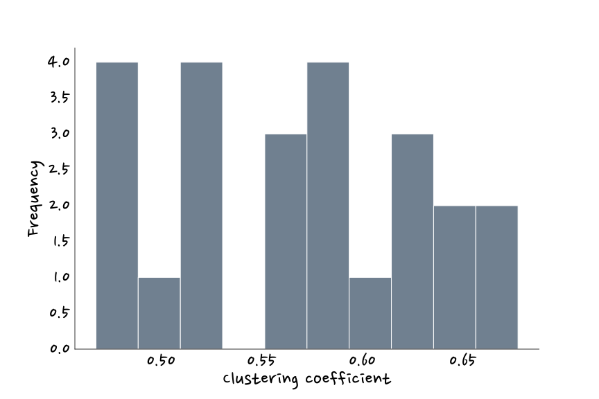
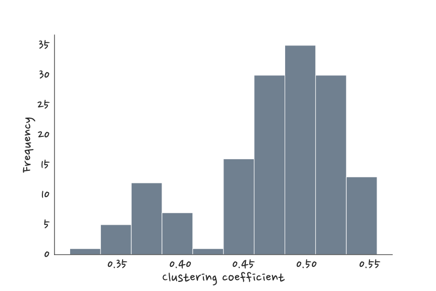
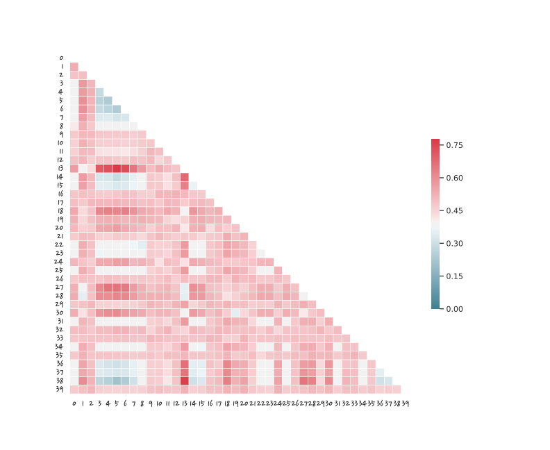
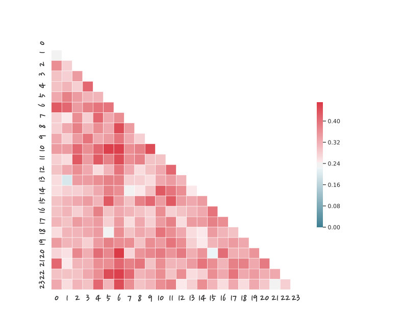

Example of a real network: a study from beginning to end
To illustrate the ideas we presented in the previous sections, we will now take a look at an experiment of our own. With the aim of generating a multiplex network, we made an anonymous questionnaire and distributed it around two different sets of people. This survey included some questions about general preferences (music taste, hobbies, preferred art, eating habits…), some about political opinion and religious beliefs, and some random ones (duck or penguin, pen or pencil, digimon or pokemon…). We built the multiplex in the following way: each question corresponds to a different layer, the nodes are the same across all layers, since one corresponds to each person, and a link is formed between nodes when they have provided the same answer.
The first group of people we distributed the questionnaire to were the PhD and Master students at IFISC, generating what we will call the IFISC network. From this experiment we obtained a set of 24 nodes, which we expected to be more similar to each other since we all share some interests in relation to our field of study.

The second experiment consisted on distributing the survey through WathsApp among our own contacts, so that we could reach a broader- and more diverse- group of people. In this way we obtained 150 participants to construct what we will call our random network.

For each multilayer network, we analysed every layer (question) separetely- we looked at each question graph and also at some of the measures we previously talked about (more precisely the average degree, average clustering and average path lenght per connected component).


Then, we collapsed all the layers into a single weighted network by adding all the repeated links between two nodes to obtain the weighted edges. In this new network we calculated the same weighted degree, clustering and average path length (we did not talk about how to measure these properties in a weighted graph because it fell out of the scope of a mere introduction to networks, but we promise we're not making this stuff up). We also computed the distribution of clustering coefficients and node degree across our network.






We also asked ourserlves more intuitive questions: how similar are any two nodes? That is, how correlated are the answers of two people? Also, how much information can we extract from an answer to a particular question in relation to another question? In other words, how correlated are the different layers with each other? We chose to adress these two questions by calculating the Hamming distance between nodes as well as between questions. This property measures how the responses of a node differ from the answers of another node (in the case of distance between nodes), and wether the same people have answered similarly in two different questions (in the case of distance between questions). For example, if the set of answers of one person is exactly the same as someone else's except for one question, their Hamming distance is 1 (before the corresponding normalization). On the other hand, in order to get the minimum distance between questions it is necessary that the sets of nodes per answer are exactly the same except for one person.


The last two matrices showed the Hamming distance between questions obtained for the IFISC (upper image) and random (lower image) networks. We observe that the larger subject pool of the random network reveals a structure of correlations among questions that the limited statistics of the IFISC network were not able to capture.


Finally, we tried to look for different communities with PCA (Principal Components Analysis), a machine learning algorithm that builds two orthogonal axes from all the properties that characterise the nodes such that de deviation among them is maximised. It then projects these nodes into the plane described by the orthogonal axes. The result of this transformation is that we see the nodes with similar properties closer together in the plane. In this way we expected to see some separated clusters, but unfortunately neither in our IFISC network nor in the random one did we manage to isolate communities.